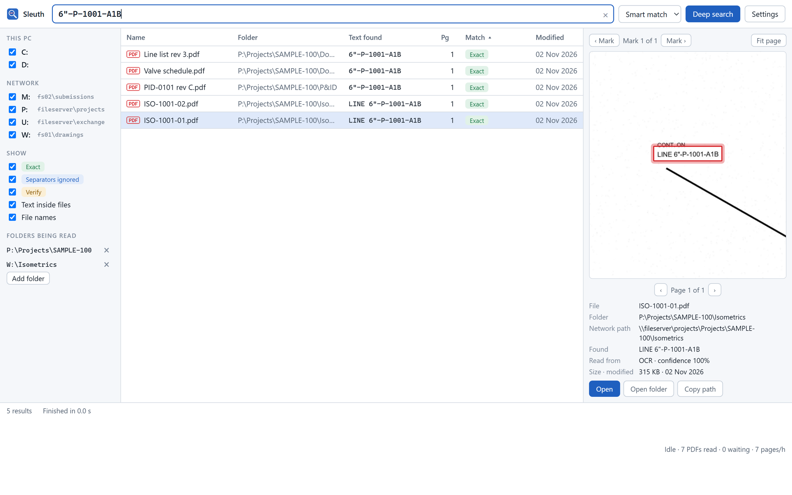
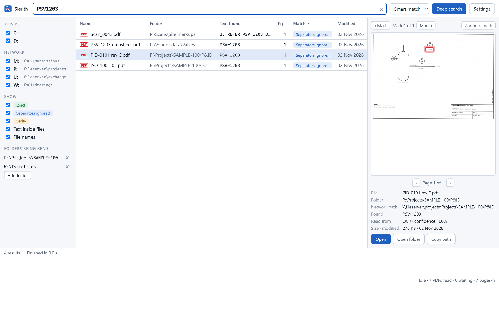
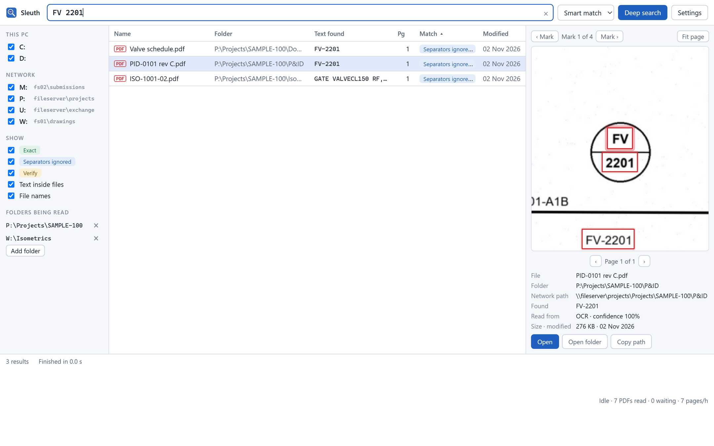
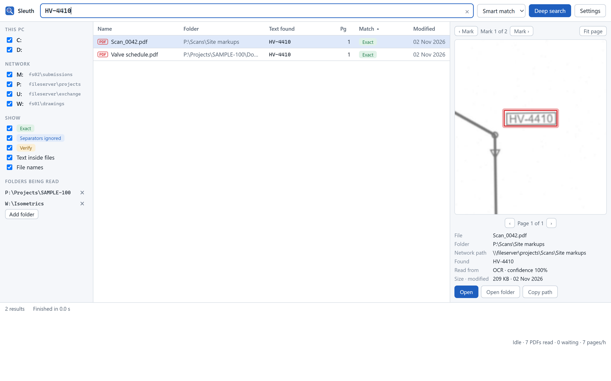
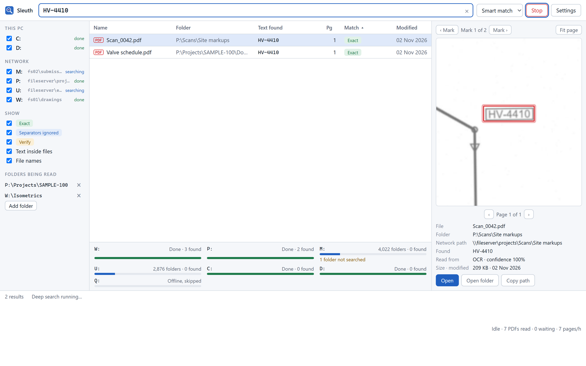
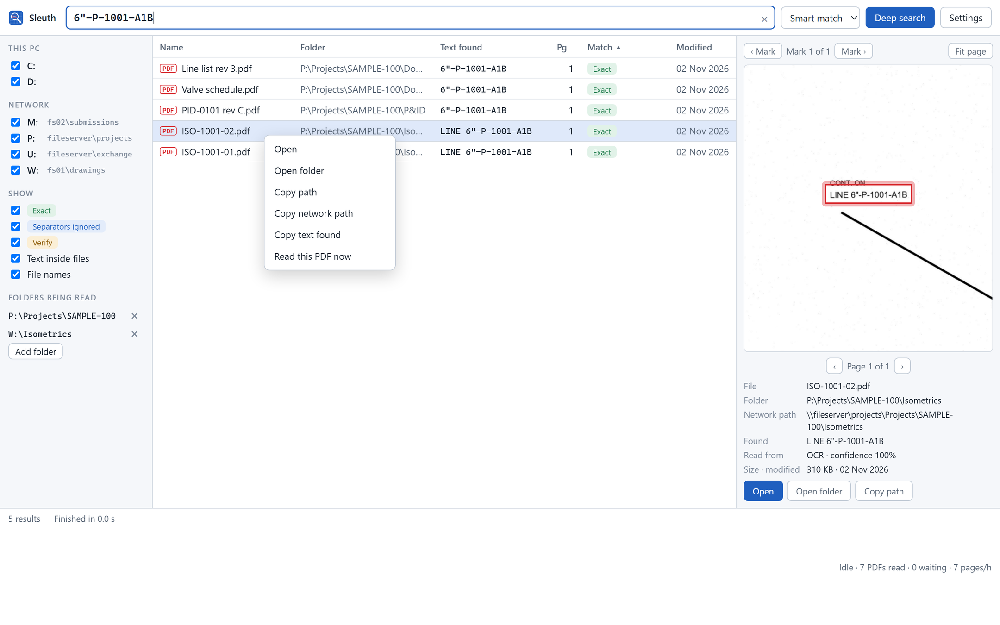
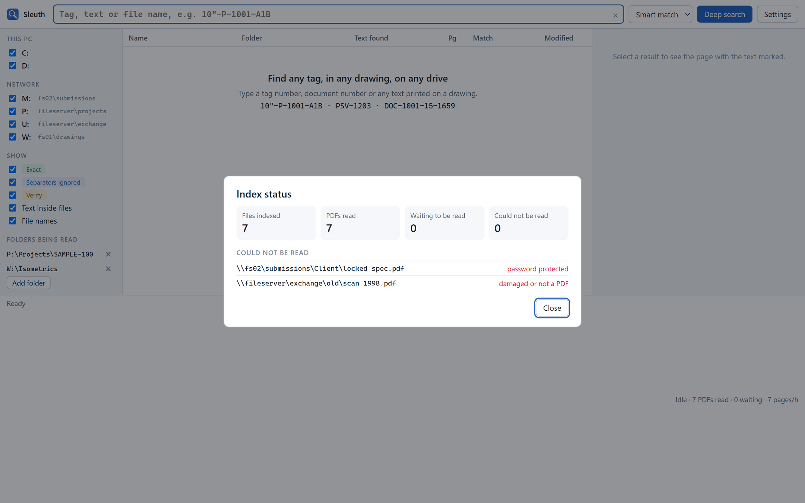

Find any tag, in any drawing, on any drive. Even when the PDF is a scan.
Sleuth reads every page of your drawings once, including scans and plotted PDFs with no text, then answers in milliseconds. Every hit opens on the page where it was found, marked in red, so you check the evidence instead of trusting a list.

Drawings write the same tag with quotes, dashes, spaces, or not at all, and scanners confuse O with 0. Sleuth compares letters and digits, folds look-alikes, and labels every result honestly.
File-name search can't see inside a scanned isometric. Sleuth reads the text layer where there is one, and OCRs pages without one, including vertical text. Unsure lines get a second reading from Windows' own OCR.
A shared reading cache on the network means a sheet read on one PC is never read again on another. Sleuth makes sure every PC is connected to it.
Deep search walks every ticked drive, a few folders at a time per file server. Offline shares are skipped in seconds, and slow folders are listed, never silently dropped.
Reading runs in the background at low priority. It pauses while you work hard or run on battery, and speeds up when the PC is idle.
Uncertain OCR is labelled Verify and never counted as exact. Files that can't be read are listed with the reason.
New versions install from inside the app after a checksum check. Your settings and index are never touched.
Each file server gets its own small team of searchers, so a slow share never holds up the others. PDFs found on the way that haven't been read yet are read straight away, and their results join the list as they come in.
These screenshots show Sleuth's own interface with results read from sample drawings. Folder and server names are examples.






Get the latest Sleuth_x.y.z_x64-setup.exe from the releases page. It installs for your account only; no admin rights needed.
Windows may say it protected your PC. Click More info, then Run anyway. Updates later won't ask.
Sleuth connects to the office reading cache at U:\Sleuth-cache. If it can't, it shows you exactly where to fix it.
Add your project folders under Folders being read. Sleuth reads them in the background. Start searching straight away.
Requires Windows 10 or 11, 64-bit. While reading drawings Sleuth uses about 1.6 GB of memory; it frees that when idle.
Download Sleuth, read the guide, and find your first tag today.